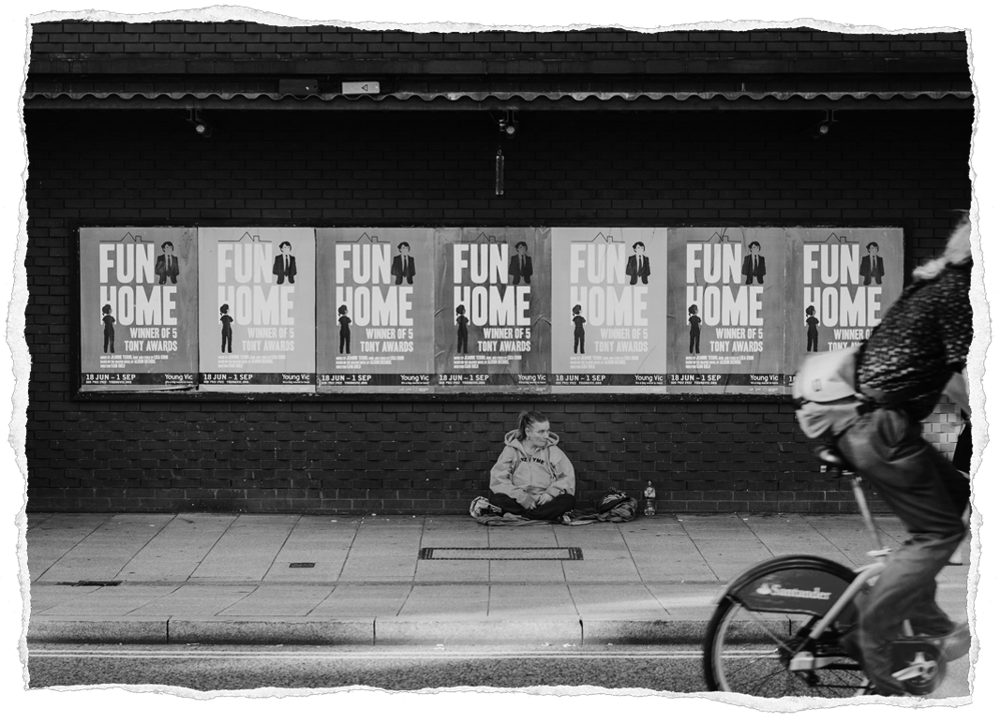
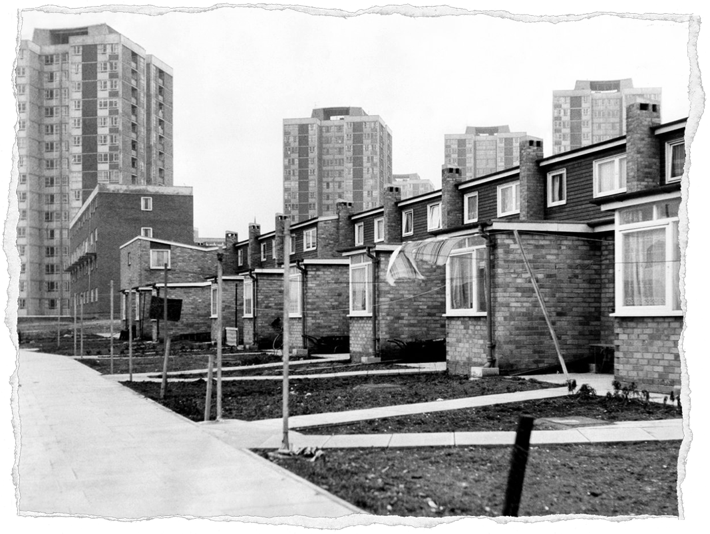

In our current economic landscape, homelessness can appear in many different forms. To many observers, homelessness is often simply seen as living on the streets. Yet, they would be mistaken in believing this was the only definition of homelessness. There are actually three forms of homelessness; Rough Sleeping, Statutory and Hidden Homelessness.[6]
The UK Government defines a Rough Sleeper as someone who sleeps in open air or buildings unintended for habitation. This would include locations such as tents, bus stops, cars and sheds.[7]
Being the most visible form of poverty, Rough Sleepers are often the image that people picture when thinking of homelessness. This is despite the fact rough sleepers make up only a tiny part of the total homeless population. There are 4,751 Rough Sleepers in England on any given night, meaning that Rough Sleepers only make up 1.67% of the total known 280,000 English homeless population.[8] However, this isn't to say Rough Sleepers shouldn't be a priority due to their small numbers. They are an example of society's least fortunate which makes it even more concerning that their numbers are rising. Between 2010 and 2017 the number of rough sleepers has risen from 1,768 to the 4,751 equating to a total rise of 169%.[9]
The term Statutory Homelessness is used to describe anyone in temporary housing provided by their local council. In the UK Local Authorities have a duty to help certain groups that meet certain criteria such as families with children.[10] Unlike Rough Sleeping, Statutory Homelessness is much more common. Currently, it accounts for 273,548 of the total known 280,000 English homeless population.[11] Statutory Homeless has seen a dramatic rise in recent years. Between the years 2012 and 2018, the country has seen a 60% increase (50,430 to 80,720) in the number of households living in temporary accommodation.[12]
Fitting the criteria to receive aid from your local government won't always be the end of the story. Across the country, only 6,463 new council homes were built in 2017 despite the English waiting list containing 1.25 million families.[13] Wait times for temporary accommodation can potentially be years long. One example of this is there were 14,000 households on Brighton and Hove's council home waiting list in 2018. However, during this time there were only 700 properties available, leaving many waiting years for a council home.[14] Those waiting are then forced into using shelters, hotels or B&Bs.
Hidden homelessness is a term used to describe those that aren't counted within official statistics. These are individuals who aren't entitled to council aid or never approached their council for help. Instead, they seek for solutions informally. Choosing to stay with family and friends, pay to live in hostels, B&Bs with their own money or squat in derelict buildings.[15] As a result, they aren't included in the official known 280,000 English homeless population.
The number of hidden homeless in the country is unclear, due to their untraceable nature. There is likely far more than the official 280,000 homeless due to the unaccounted for Hidden Homeless population.